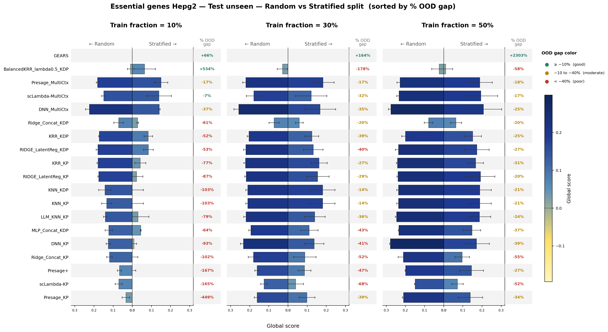

Figure 1. Global Score for the essential-gene HepG2 benchmark under a random split,
shown separately for seen and unseen test perturbations across training fractions of 10%, 30%, and 50%.

Figure 2. Global Score on test-unseen perturbations, comparing random vs. stratified splits,
with the percentage OOD gap annotated per model and training fraction (10%, 30%, 50%).